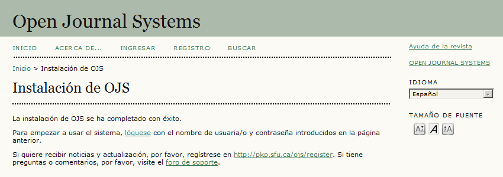
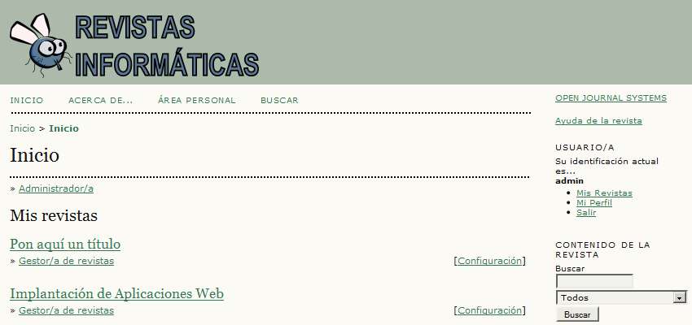
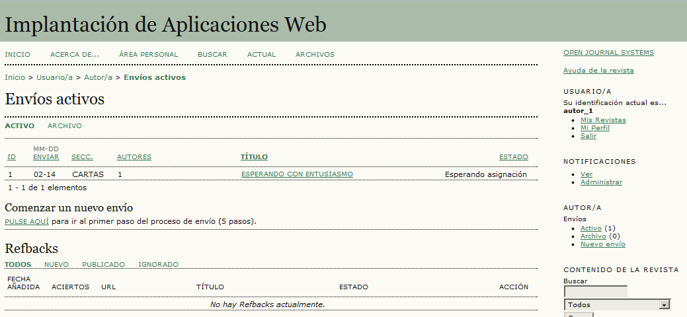
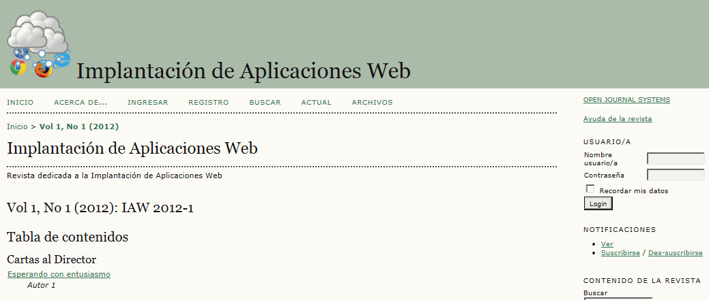

Se entregará un archivo comprimido (cuyo nombre sea el nombre del alumno) que contenga una carpeta ojs que contenga a su vez:
las cuatro capturas de pantalla.
Nota: Las capturas solicitadas serán capturas del escritorio completo, en las que se vean tanto el navegador con la información solicitada, como algunos iconos del escritorio.
la carpeta ojs.
la copia de seguridad de la base de datos iwb_ojs_1.sql.
1. Instalación
Entrar en phpMyAdmin como usuario root y crear un usuario de MySQL con nombre iwb_ojs_1, contraseña iwb_ojs_1 y base de datos iwb_ojs_1.
Descomprimir el archivo comprimido ojs-x.y.z.tar.gz, renombrar el directorio como ojs y crear en ojs el subdirectorio ojs/files.
Abrir ojs/index.php en el navegador. Se inicia el proceso de instalación:
Idioma: Español
Configuración de locales
Locale primario: Español
Configuración de ficheros
Directorio para subir: C:/ .... /ojs/files
Cuenta de administrador/a
Nombre usuario/a: admin
Correo-e: admin
Email: admin@example.org
Configuración de la base de datos
Usuario/a: iwb_ojs_1
Contraseña: iwb_ojs_1
Nombre de la base de datos: iwb_ojs_1
Crear nueva base de datos: desmarcar
Hacer una captura de pantalla donde se vea el formulario de entrada y guardarla como ojs_1.png:

2. Configuración del sitio
Cambiar el logotipo del sitio a éste:
Crear una revista:
Título: Implantación de Aplicaciones Web
Descripción: Revista dedicada a la Implantación de Aplicaciones Web
Ruta: iaw
Crear una segunda revista, inventando el título y la descripción:
Título: Inventa un título
Descripción: Inventa una descripción
Ruta: xyz
Hacer una captura de pantalla donde se vean las revistas creadas y guardarla como ojs_2.png:

3. Configuración de la revista Implantación de Aplicaciones Web
Cambiar el logotipo de la revista a éste:
Añadir una sección llamada Cartas al Director, situada antes de la sección Artículos.
4. Crear un nuevo usuario y enviar una carta
Crear un documento de texto con el bloc de notas que se llame ojs_carta_1.txt con un contenido cualquiera. Por ejemplo: "Espero con entusiasmo la publicación del primer número de la revista."
Registrar un nuevo usuario:
Nombre usuario/a: autor_1
Contraseña: autor_1
Primer nombre: Autor
Apellidos: 1
Correo-e: autor_1@example.org
Confirmación: Desmarcar
Registrarse como: Lector, Autor y Revisor
Entrar como autor_1 y en Mis revistas hacer un Nuevo envío, subiendo la carta.
Hacer una captura de pantalla donde se vean el envío pendiente y guardarla como ojs_3.png:

5. Asignar el rol de editor y aprobar la publicación
Entrar como admin y en Mis revistas > Implantación de Aplicaciones Web > Gestión de la revista > Roles > Editores incluir a autor_1.
En Mis revistas > Implantación de Aplicaciones Web > Editor > 1 sin asignar > Carta añadir como editor al autor_1 (sin enviar correo electrónico).
En Mis revistas > Implantación de Aplicaciones Web > Editor > Crear Número crear el número volumen 1, número 1, año 1, identificado por todos los campos, con título IAW 2012 nº 1
Entrar como autor_1 y en Mis revistas > Implantación de Aplicaciones Web > Editor > 1 en Revisión elegir la carta y dar Decisión editorial Aceptar envíos.
Entar como admin y en Mis revistas > Implantación de Aplicaciones Web > Editor > 1 En revisión hacer clic en la carta y en Agendar > Agendado para publicación en , elegir el nº 1 de la revista.
Como usuario sin registrar, hacer una captura de pantalla donde se vea la revista y guardarla como ojs_4.png:

6. Crear una copia de seguridad
Entrar en phpMyAdmin como usuario iwb_ojs_1, elegir la base de datos iwb_ojs_1 y exportar las tablas con el método rápido al fichero iwb_ojs_1.sql.